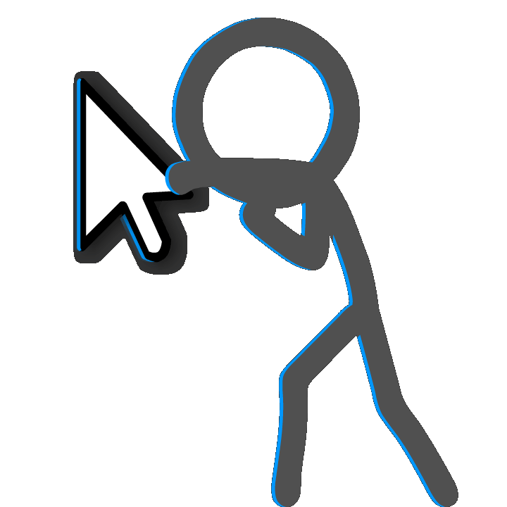

червня 2006 року, у віці 17 років, Беккер опублікував анімацію «Аніматор проти анімації»
на Newgrounds, де вона швидко стала вірусною та призвела до її повторного завантаження на різні медіа-сайти.
Невдовзі після цього неназвана компанія запропонувала йому 75 доларів за «ексклюзивні права»
на «Аніматор проти анімації», але він відмовився від цього, дослухавшись до поради Стівена Лернера,
власника Albino Blacksheep.
Беккер продовжував випускати анімації,
навчальні посібники з анімації та подальші
спін-офи серії Animator vs. Animation.
Беккер оголосив про запуск Kickstarter для карткової гри,
заснованої на його анімаціях, яка була випущена у травні 2018 року.
 Click?
>